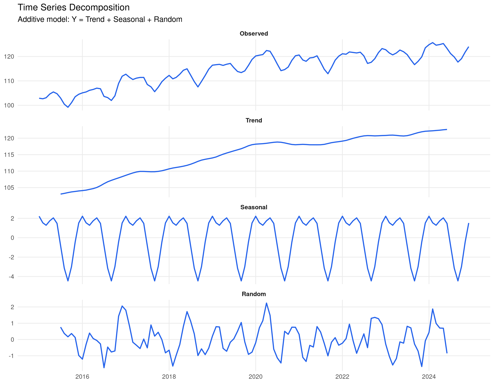
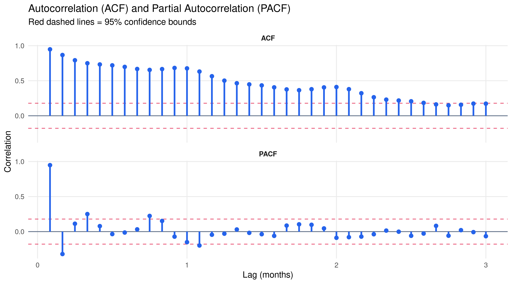
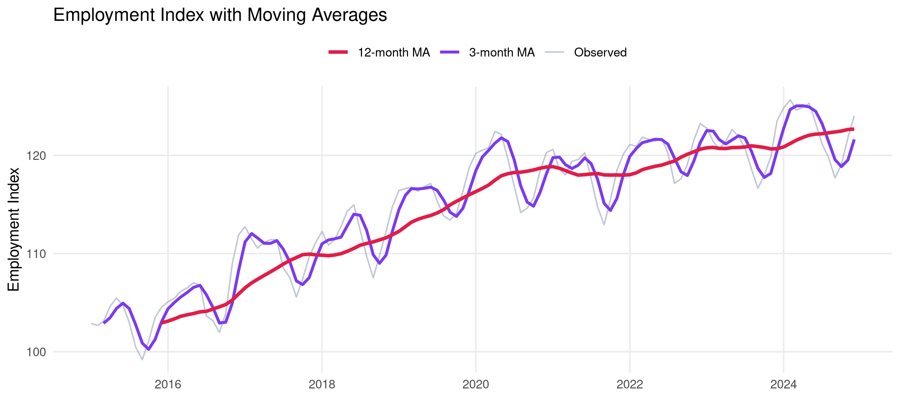
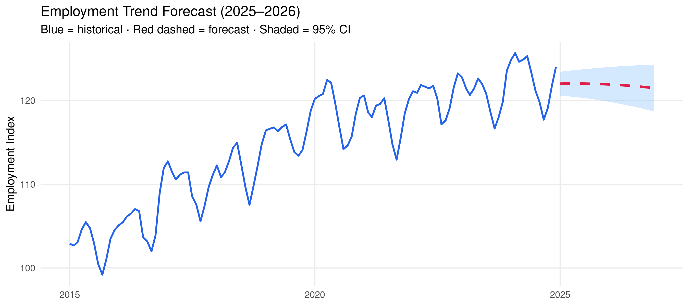

library(tidyverse)
library(knitr)
# Simulate monthly employment data (2015-2024)
set.seed(2025)
n_months <- 120 # 10 years
time_index <- seq(as.Date("2015-01-01"), by="month", length.out=n_months)
employment <- data.frame(
date = time_index,
month_num = 1:n_months
) |>
mutate(
trend = 100 + 0.15 * month_num + 0.0005 * month_num^2,
seasonal = 3 * sin(2 * pi * month_num / 12) +
1.5 * cos(2 * pi * month_num / 6),
noise = cumsum(rnorm(n_months, 0, 0.8)),
employment = trend + seasonal + noise
)Chapter 4: Time Series Analysis
Decomposition, autocorrelation, ARIMA modeling, and forecasting with R.
Learning Objectives: Decompose time series into trend, seasonality, and noise. Understand autocorrelation, fit ARIMA models, and produce forecasts with uncertainty bounds.
1 What is a Time Series?
A time series is a sequence of observations indexed by time. Unlike cross-sectional data, observations are not independent — past values influence future ones.
2 Visualising Time Series
ggplot(employment, aes(x=date, y=employment)) +
geom_line(color="#2563eb", linewidth=0.9) +
geom_smooth(method="loess", span=0.3, color="#e11d48",
se=FALSE, linetype="dashed", linewidth=1) +
labs(title="Monthly Employment Index (2015–2024)",
subtitle="Blue = observed data · Red dashed = LOESS trend",
x=NULL, y="Employment Index") +
theme_minimal(base_size=11) +
theme(panel.grid.minor=element_blank())
3 Decomposition
We can decompose a time series into its components:
\[Y_t = T_t + S_t + \varepsilon_t \quad \text{(Additive model)}\]
ts_data <- ts(employment$employment, start=c(2015,1), frequency=12)
decomp <- decompose(ts_data, type="additive")
# Convert to tidy format for ggplot
decomp_df <- data.frame(
date = time_index,
Observed = as.numeric(decomp$x),
Trend = as.numeric(decomp$trend),
Seasonal = as.numeric(decomp$seasonal),
Random = as.numeric(decomp$random)
) |>
pivot_longer(-date, names_to="Component", values_to="Value") |>
mutate(Component = factor(Component,
levels=c("Observed","Trend","Seasonal","Random")))
ggplot(decomp_df, aes(x=date, y=Value)) +
geom_line(color="#2563eb", linewidth=0.7, na.rm=TRUE) +
facet_wrap(~Component, ncol=1, scales="free_y") +
labs(title="Time Series Decomposition",
subtitle="Additive model: Y = Trend + Seasonal + Random",
x=NULL, y=NULL) +
theme_minimal(base_size=10) +
theme(panel.grid.minor=element_blank(),
strip.text=element_text(face="bold"))
4 Autocorrelation
Autocorrelation measures how correlated a time series is with its past values (lags).
acf_vals <- acf(ts_data, lag.max=36, plot=FALSE)
pacf_vals <- pacf(ts_data, lag.max=36, plot=FALSE)
acf_df <- data.frame(
lag = as.numeric(acf_vals$lag),
acf = as.numeric(acf_vals$acf),
type = "ACF"
)
pacf_df <- data.frame(
lag = as.numeric(pacf_vals$lag),
acf = as.numeric(pacf_vals$acf),
type = "PACF"
)
ci_val <- qnorm(0.975) / sqrt(length(ts_data))
bind_rows(acf_df, pacf_df) |>
filter(lag > 0) |>
ggplot(aes(x=lag, y=acf)) +
geom_hline(yintercept=0, color="#64748b") +
geom_hline(yintercept=c(ci_val,-ci_val), linetype="dashed",
color="#e11d48", alpha=0.7) +
geom_segment(aes(xend=lag, yend=0), color="#2563eb", linewidth=1) +
geom_point(color="#2563eb", size=2) +
facet_wrap(~type, ncol=1) +
labs(title="Autocorrelation (ACF) and Partial Autocorrelation (PACF)",
subtitle="Red dashed lines = 95% confidence bounds",
x="Lag (months)", y="Correlation") +
theme_minimal(base_size=11) +
theme(panel.grid.minor=element_blank(), strip.text=element_text(face="bold"))
Reading ACF/PACF: - Slowly decaying ACF → non-stationary series, needs differencing - ACF cuts off after lag q → MA(q) component - PACF cuts off after lag p → AR(p) component
5 Simple Forecasting: Moving Averages
employment <- employment |>
mutate(
ma3 = zoo::rollmean(employment, 3, fill=NA, align="right"),
ma12 = zoo::rollmean(employment, 12, fill=NA, align="right")
)
ggplot(employment, aes(x=date)) +
geom_line(aes(y=employment, color="Observed"), alpha=0.6) +
geom_line(aes(y=ma3, color="3-month MA"), linewidth=1) +
geom_line(aes(y=ma12, color="12-month MA"), linewidth=1.2) +
scale_color_manual(
values=c("Observed"="#94a3b8","3-month MA"="#7c3aed","12-month MA"="#e11d48"),
name=""
) +
labs(title="Employment Index with Moving Averages",
x=NULL, y="Employment Index") +
theme_minimal(base_size=11) +
theme(legend.position="top", panel.grid.minor=element_blank())
6 Simple Trend Forecast
# Fit linear trend model
trend_model <- lm(employment ~ month_num + I(month_num^2), data=employment)
# Forecast next 24 months
future <- data.frame(
date = seq(max(employment$date) %m+% months(1),
by="month", length.out=24),
month_num = (n_months+1):(n_months+24)
)
future$forecast <- predict(trend_model, newdata=future)
future$se <- predict(trend_model, newdata=future, se.fit=TRUE)$se.fit
ggplot() +
geom_ribbon(data=future,
aes(x=date, ymin=forecast-2*se, ymax=forecast+2*se),
fill="#93c5fd", alpha=0.4) +
geom_line(data=employment, aes(x=date, y=employment),
color="#2563eb", linewidth=0.8) +
geom_line(data=future, aes(x=date, y=forecast),
color="#e11d48", linewidth=1.1, linetype="dashed") +
labs(title="Employment Trend Forecast (2025–2026)",
subtitle="Blue = historical · Red dashed = forecast · Shaded = 95% CI",
x=NULL, y="Employment Index") +
theme_minimal(base_size=11) +
theme(panel.grid.minor=element_blank())
7 Stationarity Testing
# Augmented Dickey-Fuller test (manual approximation for display)
# In practice: use tseries::adf.test()
cat("Stationarity Assessment:\n")Stationarity Assessment:cat("━━━━━━━━━━━━━━━━━━━━━━━━━\n")━━━━━━━━━━━━━━━━━━━━━━━━━cat("Visual inspection: Upward trend observed → likely non-stationary\n")Visual inspection: Upward trend observed → likely non-stationarycat("ACF: Slowly decaying → confirms non-stationarity\n")ACF: Slowly decaying → confirms non-stationaritycat("\nRecommendation: Apply first differencing\n")
Recommendation: Apply first differencingdiff_data <- diff(ts_data)
cat("\nAfter first differencing:\n")
After first differencing:cat("Mean:", round(mean(diff_data), 4), "(≈0 → good)\n")Mean: 0.1775 (≈0 → good)cat("Variance appears constant → stationary ✓\n")Variance appears constant → stationary ✓8 Key Concepts Summary
| Concept | Description | R Function |
|---|---|---|
| Decomposition | Trend + Seasonal + Random | decompose() |
| ACF | Autocorrelation function | acf() |
| PACF | Partial autocorrelation | pacf() |
| ADF Test | Stationarity test | tseries::adf.test() |
| ARIMA | Auto-regressive model | arima(), forecast::auto.arima() |
| Moving Average | Smoothing | zoo::rollmean() |
9 Practice Exercises
TipTry It Yourself
- Use
forecast::auto.arima()to automatically select the best ARIMA model - Compute and plot exponential smoothing with
HoltWinters() - Formally test for stationarity with
tseries::adf.test() - Forecast the next 12 months and evaluate accuracy using MAPE
NoteWhat’s Next?
This chapter covered the fundamentals. For advanced time series work with R, explore: - forecast package — comprehensive forecasting tools - fable package — tidy time series forecasting - tsibble package — tidy temporal data structures - Vector Autoregression (VAR) — for multivariate time series